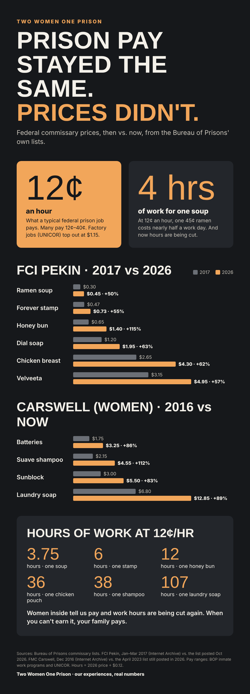

with Sabrena Morgan & Dawn de Brantes
Real talk for adults going in, coming out, and the families who love them.
We met serving time in federal prison. Pretrial, prison, halfway houses, home confinement, supervision: we've lived it, and we talk about it straight.
Newest episode
EP 6 · NOV 11 · 49 min
Every episode
Newest on top, Episode 1 at the bottom. New episodes Wednesdays; each one lands here by itself, with its Shorts underneath.

EP 6 · NOV 11 · 49 min
Straight advice for anyone about to self-surrender, especially on a short sentence. Don't cry in the halls: the women around you are doing decades. Cry in the shower or on the track.
Watch + read moreShorts from this episode are coming this week.

EP 5 · OCT 28 · 38 min
The mistakes we made between getting indicted and walking in. Hanging on to the old you instead of mourning her. Believing everyone who said “you won't go.” With the feds, you're going.
Watch + read more
EP 4 · OCT 21 · 45 min · with Amanda
Three women on what actually got us through. Mail call and the people on the outside. Three-minute phone calls rationed across the month. Books, journaling by hand, music on an MP3 player that cost more than it should.
Watch + read more
EP 3 · OCT 14 · 63 min
How halfway houses actually work, and don't: the Second Chance Act, the First Step Act, CARES Act home confinement, and why nobody inside prepares you for any of it.
Watch + read more
EP 2 · SEP 26 · 59 min
Same prison, two very different times. For a lot of women the trauma started long before the handcuffs, and a locked door was the first quiet they ever had.
Watch + read more
EP 1 · SEP 20 · 48 min
Prison takes the little things first. Sabrena went more than a year without seeing the moon.
Watch + read moreAll Shorts on YouTube
Coming up
Coming
Locked Down, Priced Out
Federal prison during COVID, and what the lockdown taught prisons they could get away with. Plus commissary: pay stayed the same, prices didn't.

Coming
Re-entry Is a Fairy Tale
“Re-entry” sounds like a destination. It's really a new sentence with no expiration date. Why we want a real path to federal expungement.
From our blogs
Newest on top. Updates by itself.
Your hosts
Sabrena Morgan
Sabrena started blogging from inside a federal prison and came home writing the way she talks: no sugar coating, no victim mentality, no waiting for anybody's validation. Years out now, she lives life on her own terms, and still can't leave a room without saying “when I was in prison.”
Dawn de Brantes
Dawn, The Hippie Diva, did her time and came home to rebuild from the dirt up. Today she's a homesteader, songwriter and self-taught AI nerd, making music about walking out of every kind of prison. She calls herself a Gen ex-con: suspicious, tinfoil hat and all, and done apologizing for it.
Free resources
Federal prison commissary lists
Every BOP facility in one searchable list, with item prices for 46 of them. Free.
Our other homes
debrantes.com
Home base for every de Brantes project, all in one place.
thehippiediva.com
Dawn's music, videos, homestead and writing.
Sabrena Morgan
Sabrena's blog: no sugar coating, no victim mentality.